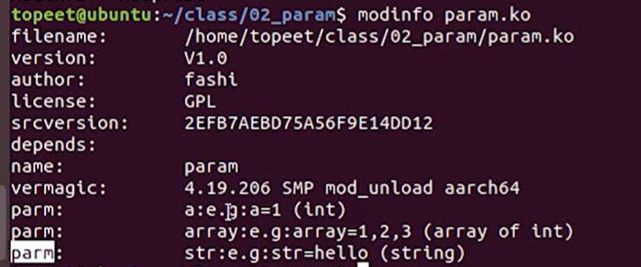

<!DOCTYPE lake>
<h1 data-lake-id="WkyY2" data-lake-index-type="2" id="WkyY2"><span data-lake-id="u5347f2a0" id="u5347f2a0" style="color: rgb(17, 24, 39)">驱动可以传递的参数类型</span></h1><p data-lake-id="ud5d3ee02" id="ud5d3ee02"><span class="lake-fontsize-12" data-lake-id="uf3e60c17" id="uf3e60c17" style="color: rgb(44, 44, 54)">驱动传递参数的类型分成三类：</span></p><ul list="ucb8629dc"><li data-lake-id="u36f61f72" fid="u5d36ac05" id="u36f61f72"><strong><span class="lake-fontsize-12" data-lake-id="ua9addcf0" id="ua9addcf0" style="color: rgb(17, 24, 39)">基本类型</span></strong><span class="lake-fontsize-12" data-lake-id="u1d0a6fcf" id="u1d0a6fcf" style="color: rgb(44, 44, 54)">：char, bool, int, long, short, byte, ushort, uint。</span></li><li data-lake-id="u107a669d" fid="u5d36ac05" id="u107a669d"><strong><span class="lake-fontsize-12" data-lake-id="u2c005d37" id="u2c005d37" style="color: rgb(17, 24, 39)">数组</span></strong><span class="lake-fontsize-12" data-lake-id="u7b6050bd" id="u7b6050bd" style="color: rgb(44, 44, 54)">：array</span></li><li data-lake-id="uaa9bd844" fid="u5d36ac05" id="uaa9bd844"><strong><span class="lake-fontsize-12" data-lake-id="u54e85446" id="u54e85446" style="color: rgb(17, 24, 39)">字符串</span></strong><span class="lake-fontsize-12" data-lake-id="u48aaa919" id="u48aaa919" style="color: rgb(44, 44, 54)">：string</span></li></ul><h1 data-lake-id="ZXkTP" data-lake-index-type="2" id="ZXkTP"><span data-lake-id="u1333997e" id="u1333997e" style="color: rgb(44, 44, 54)">如何给驱动传参</span></h1><p data-lake-id="u4c952c4d" id="u4c952c4d"><span class="lake-fontsize-12" data-lake-id="uba8c4453" id="uba8c4453" style="color: rgb(44, 44, 54)">驱动支持的参数类型有基本类型，数组，字符串。这三个类型分别对应函数：</span></p><ul list="u4ea231c0"><li data-lake-id="u7f034aaa" fid="u093331b6" id="u7f034aaa"><code data-lake-id="uddbd9a40" id="uddbd9a40"><span class="lake-fontsize-11" data-lake-id="u02ad0967" id="u02ad0967" style="color: rgb(97, 92, 237); background-color: rgb(239, 238, 255)">module_param</span></code><span class="lake-fontsize-12" data-lake-id="u996d9c68" id="u996d9c68" style="color: rgb(44, 44, 54)">：传递基本类型函数</span></li><li data-lake-id="u29fe14ac" fid="u093331b6" id="u29fe14ac"><code data-lake-id="ue1230328" id="ue1230328"><span class="lake-fontsize-11" data-lake-id="u9ae2b213" id="u9ae2b213" style="color: rgb(97, 92, 237); background-color: rgb(239, 238, 255)">module_param_array</span></code><span class="lake-fontsize-12" data-lake-id="u42db9f81" id="u42db9f81" style="color: rgb(44, 44, 54)">：传递数组类型函数</span></li><li data-lake-id="u36aa0cf0" fid="u093331b6" id="u36aa0cf0"><code data-lake-id="u0ddc17fd" id="u0ddc17fd"><span class="lake-fontsize-11" data-lake-id="u91ca466f" id="u91ca466f" style="color: rgb(97, 92, 237); background-color: rgb(239, 238, 255)">module_param_string</span></code><span class="lake-fontsize-12" data-lake-id="u0b51611b" id="u0b51611b" style="color: rgb(44, 44, 54)">：传递字符串类型函数</span></li></ul><p data-lake-id="ua885f5b7" id="ua885f5b7"><span class="lake-fontsize-12" data-lake-id="u9fc57c32" id="u9fc57c32" style="color: rgb(44, 44, 54)">这三个函数在 Linux 内核源码 </span><code data-lake-id="ud61b9b9b" id="ud61b9b9b"><span class="lake-fontsize-11" data-lake-id="ueaa5f565" id="ueaa5f565" style="color: rgb(97, 92, 237); background-color: rgb(239, 238, 255)">include/linux/moduleparam.h</span></code><span class="lake-fontsize-12" data-lake-id="u364ddcaa" id="u364ddcaa" style="color: rgb(44, 44, 54)"> 中有定义，如下：</span></p><span class="yuque-card-unsupported">[codeblock]</span><h2 data-lake-id="gpC4o" data-lake-index-type="2" id="gpC4o"><span data-lake-id="u8b954346" id="u8b954346" style="color: rgb(17, 24, 39)">module_param函数</span></h2><ul list="u1592d7a8"><li data-lake-id="u07efb486" fid="u1985f6cc" id="u07efb486"><strong><span class="lake-fontsize-12" data-lake-id="u73a86ca2" id="u73a86ca2" style="color: rgb(17, 24, 39)">函数功能</span></strong><span class="lake-fontsize-12" data-lake-id="ubbbd08ba" id="ubbbd08ba" style="color: rgb(44, 44, 54)">：传递基本类型参数给驱动</span></li><li data-lake-id="u74e8faaa" fid="u1985f6cc" id="u74e8faaa"><strong><span class="lake-fontsize-12" data-lake-id="u43646f5f" id="u43646f5f" style="color: rgb(17, 24, 39)">函数原型</span></strong><span class="lake-fontsize-12" data-lake-id="u659c044b" id="u659c044b" style="color: rgb(44, 44, 54)">：</span><code data-lake-id="u141b753c" id="u141b753c"><span class="lake-fontsize-11" data-lake-id="u6b1eb3bb" id="u6b1eb3bb" style="color: rgb(97, 92, 237); background-color: rgb(239, 238, 255)">module_param(name, type, perm);</span></code></li><li data-lake-id="u58447d77" fid="u1985f6cc" id="u58447d77"><strong><span class="lake-fontsize-12" data-lake-id="u373b7259" id="u373b7259" style="color: rgb(17, 24, 39)">函数参数</span></strong><span class="lake-fontsize-12" data-lake-id="ub592dac7" id="ub592dac7" style="color: rgb(44, 44, 54)">：</span></li></ul><ul data-lake-indent="1" list="u1592d7a8"><li data-lake-id="u0cb35593" fid="ue29a0c11" id="u0cb35593"><code data-lake-id="u382ce8fd" id="u382ce8fd"><span class="lake-fontsize-11" data-lake-id="ub26c89c6" id="ub26c89c6" style="color: rgb(97, 92, 237); background-color: rgb(239, 238, 255)">name</span></code><span class="lake-fontsize-12" data-lake-id="u3eb49a66" id="u3eb49a66" style="color: rgb(44, 44, 54)">：要传递给驱动代码中的变量的名字。</span></li><li data-lake-id="ud1b66824" fid="ue29a0c11" id="ud1b66824"><code data-lake-id="ub79f1023" id="ub79f1023"><span class="lake-fontsize-11" data-lake-id="u7d242d56" id="u7d242d56" style="color: rgb(97, 92, 237); background-color: rgb(239, 238, 255)">type</span></code><span class="lake-fontsize-12" data-lake-id="u72ea9684" id="u72ea9684" style="color: rgb(44, 44, 54)">：参数类型。</span></li><li data-lake-id="u61bf1358" fid="ue29a0c11" id="u61bf1358"><code data-lake-id="u488e34d1" id="u488e34d1"><span class="lake-fontsize-11" data-lake-id="ue875f15e" id="ue875f15e" style="color: rgb(97, 92, 237); background-color: rgb(239, 238, 255)">perm</span></code><span class="lake-fontsize-12" data-lake-id="u26c2871a" id="u26c2871a" style="color: rgb(44, 44, 54)">：参数的读写权限。</span></li></ul><h2 data-lake-id="vhBcy" data-lake-index-type="2" id="vhBcy"><strong><span class="lake-fontsize-12" data-lake-id="uab1f2884" id="uab1f2884" style="color: rgb(17, 24, 39)">module_param_array函数</span></strong></h2><ul list="u9a28bf7a"><li data-lake-id="u57d80bc7" fid="u3ef34aa6" id="u57d80bc7"><strong><span class="lake-fontsize-12" data-lake-id="ua31b4002" id="ua31b4002" style="color: rgb(17, 24, 39)">函数功能</span></strong><span class="lake-fontsize-12" data-lake-id="ua4fba3a3" id="ua4fba3a3" style="color: rgb(44, 44, 54)">：传递数组类型参数给驱动</span></li><li data-lake-id="u068fca98" fid="u3ef34aa6" id="u068fca98"><strong><span class="lake-fontsize-12" data-lake-id="u98e9b2c8" id="u98e9b2c8" style="color: rgb(17, 24, 39)">函数原型</span></strong><span class="lake-fontsize-12" data-lake-id="u12cb59f5" id="u12cb59f5" style="color: rgb(44, 44, 54)">：</span><code data-lake-id="ued5c4625" id="ued5c4625"><span class="lake-fontsize-11" data-lake-id="uc14fc332" id="uc14fc332" style="color: rgb(97, 92, 237); background-color: rgb(239, 238, 255)">module_param_array(name, type, nump, perm);</span></code></li><li data-lake-id="u2fc90f33" fid="u3ef34aa6" id="u2fc90f33"><strong><span class="lake-fontsize-12" data-lake-id="ub3af5378" id="ub3af5378" style="color: rgb(17, 24, 39)">函数参数</span></strong><span class="lake-fontsize-12" data-lake-id="u36ce00be" id="u36ce00be" style="color: rgb(44, 44, 54)">：</span></li></ul><ul data-lake-indent="1" list="u9a28bf7a"><li data-lake-id="u4c31ce92" fid="u493f57b7" id="u4c31ce92"><code data-lake-id="uf4544458" id="uf4544458"><span class="lake-fontsize-11" data-lake-id="u1bda126b" id="u1bda126b" style="color: rgb(97, 92, 237); background-color: rgb(239, 238, 255)">name</span></code><span class="lake-fontsize-12" data-lake-id="u67ccedfb" id="u67ccedfb" style="color: rgb(44, 44, 54)">：要传递给驱动代码中的变量的名字。</span></li><li data-lake-id="ub4cd9e1a" fid="u493f57b7" id="ub4cd9e1a"><code data-lake-id="u6c8b0cc5" id="u6c8b0cc5"><span class="lake-fontsize-11" data-lake-id="u0efe762e" id="u0efe762e" style="color: rgb(97, 92, 237); background-color: rgb(239, 238, 255)">type</span></code><span class="lake-fontsize-12" data-lake-id="ub7db43fb" id="ub7db43fb" style="color: rgb(44, 44, 54)">：参数类型。</span></li><li data-lake-id="u4e97367d" fid="u493f57b7" id="u4e97367d"><code data-lake-id="u3fe46004" id="u3fe46004"><span class="lake-fontsize-11" data-lake-id="u23f522cc" id="u23f522cc" style="color: rgb(97, 92, 237); background-color: rgb(239, 238, 255)">nump</span></code><span class="lake-fontsize-12" data-lake-id="u8c92c0fe" id="u8c92c0fe" style="color: rgb(44, 44, 54)">：数组的长度。</span></li><li data-lake-id="u7be1151f" fid="u493f57b7" id="u7be1151f"><code data-lake-id="u044c750e" id="u044c750e"><span class="lake-fontsize-11" data-lake-id="ubbb46dc1" id="ubbb46dc1" style="color: rgb(97, 92, 237); background-color: rgb(239, 238, 255)">perm</span></code><span class="lake-fontsize-12" data-lake-id="u82748fa1" id="u82748fa1" style="color: rgb(44, 44, 54)">：参数的读写权限。</span></li></ul><h2 data-lake-id="oaQFo" data-lake-index-type="2" id="oaQFo"><strong><span class="lake-fontsize-12" data-lake-id="u77489a94" id="u77489a94" style="color: rgb(17, 24, 39)">module_param_string函数</span></strong></h2><ul list="u93256141"><li data-lake-id="ufe7c8341" fid="ub5945054" id="ufe7c8341"><strong><span class="lake-fontsize-12" data-lake-id="u85829e0e" id="u85829e0e" style="color: rgb(17, 24, 39)">函数功能</span></strong><span class="lake-fontsize-12" data-lake-id="u21b9d311" id="u21b9d311" style="color: rgb(44, 44, 54)">：传递字符串类型参数给驱动</span></li><li data-lake-id="u102b058c" fid="ub5945054" id="u102b058c"><strong><span class="lake-fontsize-12" data-lake-id="u7a47817a" id="u7a47817a" style="color: rgb(17, 24, 39)">函数原型</span></strong><span class="lake-fontsize-12" data-lake-id="uf7850a38" id="uf7850a38" style="color: rgb(44, 44, 54)">：</span><code data-lake-id="u82da54a5" id="u82da54a5"><span class="lake-fontsize-11" data-lake-id="ud9b4182b" id="ud9b4182b" style="color: rgb(97, 92, 237); background-color: rgb(239, 238, 255)">module_param_string(name, string, len, perm);</span></code></li><li data-lake-id="ua6dc6215" fid="ub5945054" id="ua6dc6215"><strong><span class="lake-fontsize-12" data-lake-id="uaf79052b" id="uaf79052b" style="color: rgb(17, 24, 39)">函数参数</span></strong><span class="lake-fontsize-12" data-lake-id="u6219b2d2" id="u6219b2d2" style="color: rgb(44, 44, 54)">：</span></li></ul><ul data-lake-indent="1" list="u93256141"><li data-lake-id="ud82a1681" fid="u520ece62" id="ud82a1681"><code data-lake-id="u55d4373f" id="u55d4373f"><span class="lake-fontsize-11" data-lake-id="u436436a0" id="u436436a0" style="color: rgb(97, 92, 237); background-color: rgb(239, 238, 255)">name</span></code><span class="lake-fontsize-12" data-lake-id="u9782c7b6" id="u9782c7b6" style="color: rgb(44, 44, 54)">：要传递给驱动代码中的变量的名字。</span></li><li data-lake-id="u4a52d5c3" fid="u520ece62" id="u4a52d5c3"><code data-lake-id="udfe5aee3" id="udfe5aee3"><span class="lake-fontsize-11" data-lake-id="u7b781f5c" id="u7b781f5c" style="color: rgb(97, 92, 237); background-color: rgb(239, 238, 255)">string</span></code><span class="lake-fontsize-12" data-lake-id="uc69384c1" id="uc69384c1" style="color: rgb(44, 44, 54)">：驱动程序中变量的名字，要和参数 </span><code data-lake-id="u62ffcb42" id="u62ffcb42"><span class="lake-fontsize-11" data-lake-id="uf4b431c7" id="uf4b431c7" style="color: rgb(97, 92, 237); background-color: rgb(239, 238, 255)">name</span></code><span class="lake-fontsize-12" data-lake-id="u94407eac" id="u94407eac" style="color: rgb(44, 44, 54)"> 的名字保持一致。</span></li><li data-lake-id="u2ebe9d03" fid="u520ece62" id="u2ebe9d03"><code data-lake-id="u7dc4d5cb" id="u7dc4d5cb"><span class="lake-fontsize-11" data-lake-id="ua5ecb262" id="ua5ecb262" style="color: rgb(97, 92, 237); background-color: rgb(239, 238, 255)">len</span></code><span class="lake-fontsize-12" data-lake-id="ua5c640d4" id="ua5c640d4" style="color: rgb(44, 44, 54)">：字符串的大小。</span></li><li data-lake-id="u71af8ac6" fid="u520ece62" id="u71af8ac6"><code data-lake-id="ua61f0d3b" id="ua61f0d3b"><span class="lake-fontsize-11" data-lake-id="ue11c033a" id="ue11c033a" style="color: rgb(97, 92, 237); background-color: rgb(239, 238, 255)">perm</span></code><span class="lake-fontsize-12" data-lake-id="uc31270b0" id="uc31270b0" style="color: rgb(44, 44, 54)">：参数的读写权限。</span></li></ul><h2 data-lake-id="SWAzL" data-lake-index-type="2" id="SWAzL"><strong><span class="lake-fontsize-12" data-lake-id="u203204ed" id="u203204ed" style="color: rgb(17, 24, 39)">MODULE_PARM_DESC函数</span></strong></h2><ul list="u680b6bd5"><li data-lake-id="uf9ee8300" fid="u4568263b" id="uf9ee8300"><strong><span class="lake-fontsize-12" data-lake-id="u83a31287" id="u83a31287" style="color: rgb(17, 24, 39)">函数功能</span></strong><span class="lake-fontsize-12" data-lake-id="u72ade063" id="u72ade063" style="color: rgb(44, 44, 54)">：描述模块参数的信息。在 </span><code data-lake-id="u11b67186" id="u11b67186"><span class="lake-fontsize-11" data-lake-id="u5f075ea5" id="u5f075ea5" style="color: rgb(97, 92, 237); background-color: rgb(239, 238, 255)">include/linux/moduleparam.h</span></code><span class="lake-fontsize-12" data-lake-id="ubfefa6b9" id="ubfefa6b9" style="color: rgb(44, 44, 54)"> 定义</span></li><li data-lake-id="uc8ed7829" fid="u4568263b" id="uc8ed7829"><strong><span class="lake-fontsize-12" data-lake-id="u7ee4ca7d" id="u7ee4ca7d" style="color: rgb(17, 24, 39)">函数原型</span></strong><span class="lake-fontsize-12" data-lake-id="u8df2f241" id="u8df2f241" style="color: rgb(44, 44, 54)">：</span><code data-lake-id="u7acc3125" id="u7acc3125"><span class="lake-fontsize-11" data-lake-id="u80fa42e7" id="u80fa42e7" style="color: rgb(97, 92, 237); background-color: rgb(239, 238, 255)">MODULE_PARM_DESC(_parm, desc)</span></code></li><li data-lake-id="ud8ada9d0" fid="u4568263b" id="ud8ada9d0"><strong><span class="lake-fontsize-12" data-lake-id="u4401a18e" id="u4401a18e" style="color: rgb(17, 24, 39)">函数参数</span></strong><span class="lake-fontsize-12" data-lake-id="ufcd8ddfc" id="ufcd8ddfc" style="color: rgb(44, 44, 54)">：</span></li></ul><ul data-lake-indent="1" list="u680b6bd5"><li data-lake-id="uecfa77bc" fid="ufc5f0188" id="uecfa77bc"><code data-lake-id="u18acb730" id="u18acb730"><span class="lake-fontsize-11" data-lake-id="u25dabd00" id="u25dabd00" style="color: rgb(97, 92, 237); background-color: rgb(239, 238, 255)">_parm</span></code><span class="lake-fontsize-12" data-lake-id="uea453e63" id="uea453e63" style="color: rgb(44, 44, 54)">：要描述的参数的参数名称。</span></li><li data-lake-id="u5b80c981" fid="ufc5f0188" id="u5b80c981"><code data-lake-id="u8b87efb2" id="u8b87efb2"><span class="lake-fontsize-11" data-lake-id="u16323189" id="u16323189" style="color: rgb(97, 92, 237); background-color: rgb(239, 238, 255)">desc</span></code><span class="lake-fontsize-12" data-lake-id="u58218141" id="u58218141" style="color: rgb(44, 44, 54)">：描述信息。</span></li></ul><h2 data-lake-id="z4STZ" data-lake-index-type="2" id="z4STZ"><strong><span class="lake-fontsize-12" data-lake-id="ue5b89f80" id="ue5b89f80" style="color: rgb(17, 24, 39)">参数的读写权限</span></strong></h2><p data-lake-id="uc7594cdc" id="uc7594cdc"><span class="lake-fontsize-12" data-lake-id="u8b7c745f" id="u8b7c745f" style="color: rgb(44, 44, 54)">读写权限在 </span><code data-lake-id="ua485f7db" id="ua485f7db"><span class="lake-fontsize-11" data-lake-id="ue7575c86" id="ue7575c86" style="color: rgb(97, 92, 237); background-color: rgb(239, 238, 255)">include/linux/stat.h</span></code><span class="lake-fontsize-12" data-lake-id="u07503da6" id="u07503da6" style="color: rgb(44, 44, 54)"> 和 </span><code data-lake-id="u457de498" id="u457de498"><span class="lake-fontsize-11" data-lake-id="u6ed883e9" id="u6ed883e9" style="color: rgb(97, 92, 237); background-color: rgb(239, 238, 255)">include/uapi/linux/stat.h</span></code><span class="lake-fontsize-12" data-lake-id="uda47d5b6" id="uda47d5b6" style="color: rgb(44, 44, 54)"> 下有定义，一般使用 </span><code data-lake-id="u7c2fa602" id="u7c2fa602"><span class="lake-fontsize-11" data-lake-id="uf6a4c655" id="uf6a4c655" style="color: rgb(97, 92, 237); background-color: rgb(239, 238, 255)">S_IRUGO</span></code><span class="lake-fontsize-12" data-lake-id="uc427f1a6" id="uc427f1a6" style="color: rgb(44, 44, 54)">，也可以使用数字表示，如 444 表示 </span><code data-lake-id="u5cdb531d" id="u5cdb531d"><span class="lake-fontsize-11" data-lake-id="u3ad6ac79" id="u3ad6ac79" style="color: rgb(97, 92, 237); background-color: rgb(239, 238, 255)">S_IRUGO</span></code></p><p data-lake-id="u986dd2b4" id="u986dd2b4"><code data-lake-id="uae0c3a4a" id="uae0c3a4a"><strong><span class="lake-fontsize-12" data-lake-id="ued3fccd9" id="ued3fccd9" style="color: rgb(17, 24, 39)">include/linux/stat.h</span></strong></code><strong><span class="lake-fontsize-12" data-lake-id="ub387deaa" id="ub387deaa" style="color: rgb(17, 24, 39)">中的权限定义:</span></strong></p><span class="yuque-card-unsupported">[codeblock]</span><p data-lake-id="uc13a663a" id="uc13a663a"><strong><span class="lake-fontsize-12" data-lake-id="uf73a5432" id="uf73a5432" style="color: rgb(17, 24, 39)">include/uapi/linux/stat.h</span></strong></p><span class="yuque-card-unsupported">[codeblock]</span><h1 data-lake-id="TLMg0" data-lake-index-type="2" id="TLMg0"><span data-lake-id="u77af1dd3" id="u77af1dd3">内核传参实现</span></h1><h2 data-lake-id="oJWQ5" data-lake-index-type="2" id="oJWQ5"><span data-lake-id="u19297c48" id="u19297c48">驱动代码编写</span></h2><span class="yuque-card-unsupported">[codeblock]</span><h2 data-lake-id="fB6RN" data-lake-index-type="2" id="fB6RN"><span data-lake-id="u16f2f3ec" id="u16f2f3ec">Makefile</span></h2><span class="yuque-card-unsupported">[codeblock]</span><h2 data-lake-id="Q25Cz" data-lake-index-type="2" id="Q25Cz"><span data-lake-id="uf77ad204" id="uf77ad204">编译</span></h2><span class="yuque-card-unsupported">[codeblock]</span><h2 data-lake-id="tlxpE" data-lake-index-type="2" id="tlxpE"><span data-lake-id="u30be3689" id="u30be3689">安装驱动模块</span></h2><p data-lake-id="u50951b41" id="u50951b41"><span class="lake-fontsize-12" data-lake-id="ud5cfd14e" id="ud5cfd14e">查看ko的参数</span></p><p data-lake-id="ubc67f374" id="ubc67f374"></p><span class="yuque-card-unsupported">[codeblock]</span>